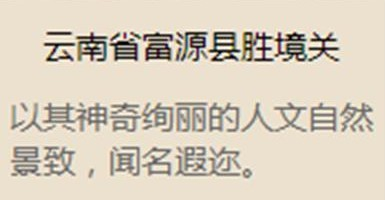
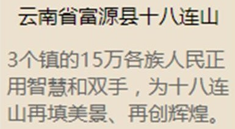
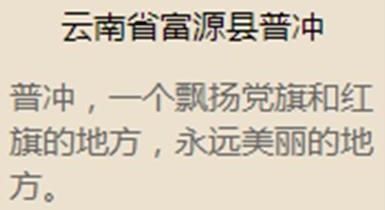
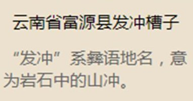
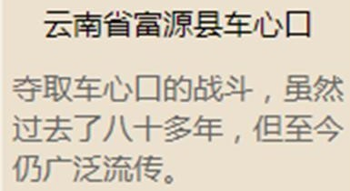
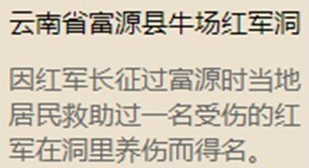
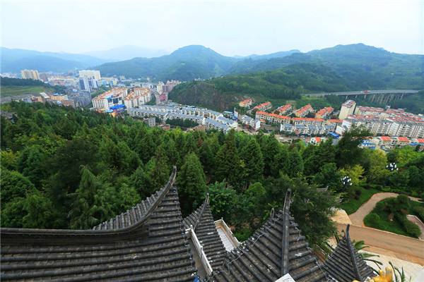
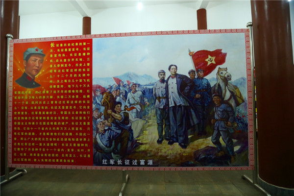
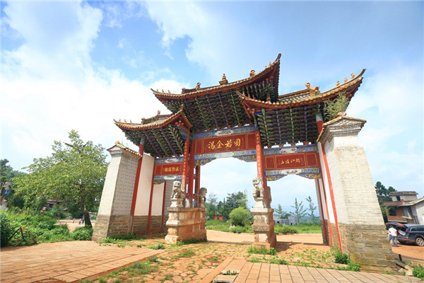

富源人富源事儿
|
胜境关

|
十八连山

|
普冲

|
|
发冲槽子

|
车心口

|
牛场红军洞

|
长征是人类历史上的伟大奇迹，长征是宣言书、长征是宣传队、长征是播种机。八十年前，红军长征两次过富源，留下了毛泽东、周恩来、朱德、贺龙、肖克等老一辈无产阶级革命家的足迹，在人民群众中产生了广泛影响，红军长征的历史功勋，永远铭刻在我县各族人民心中。红军指战员英勇战斗，不怕牺牲，流血流汗；爱护人民，组织贫苦农民打土豪，分浮财，宣传共产党的政策，播下革命火种，留下了许多动人的故事和珍贵文物，永远鼓午着我们奋勇前进。中国王农红军两次过富源，在我县革命史上写下了极其光辉的一页。
中国工农红军一方面军(中央红军)和红二方面军分别于一九三五年四月和一九三六年三月长征经过富源(平彝)。富源是红一方面军长征通过云南的笫一个县。红军在富源歼灭了滇军独立二团，打垮了滇军孙渡纵队所属安恩溥旅的堵击，为红军顺利过云南，北渡金沙江创造了有利条件。红一方面军于一九三五年四月二十三日至四月三十六日经过富源，历时四天三夜，行程三百多华里，经过了富源县的七个区，四十个乡，一百三十九个自然村，和滇军及民团武装进行了四次战斗。在经过的地方，打土豪、分浮财、开仓济贫。宣传了革命道理，留下了深刻的影响和珍贵的革命文物。
红二方面军长征过富源，属于乌蒙山回旋战的一部分，由于在乌蒙山回旋引得滇军孙渡纵队及郭汝栋纵队向东追击。摆脱了敌人，顺利西渡金沙江，北上抗日。红二方面军于一九三六年三月二十八日、二十九日经过富源县后所区、城关区，在三月二十八日派小部队佯攻县城，吓得敌人龟缩于城内，红六军团顺利到贵州省盘县集结休整。一九三六年四月一日、二日、三日，红二方面军分两路再经富源西进，沿途散发了大量宣传品，留下了珍贵的革命文物。红二方面军还在大河一带“扩红”，动员了三个贫苦农民加入红军。沿路又有红军伤员留下来，成为革命火种，后来在我县发展游击战争中，起到了重要的作用。
1984年编制《红军长征过富源》一书